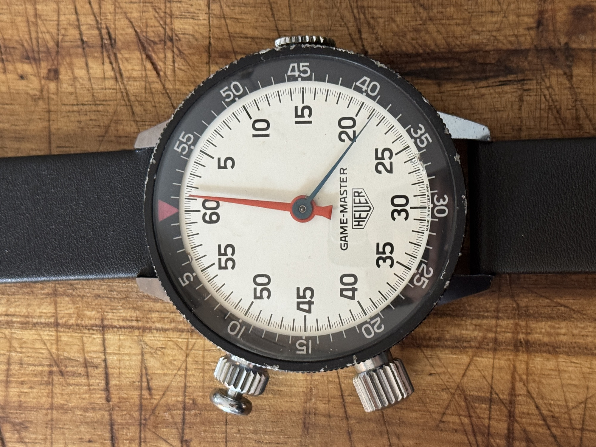
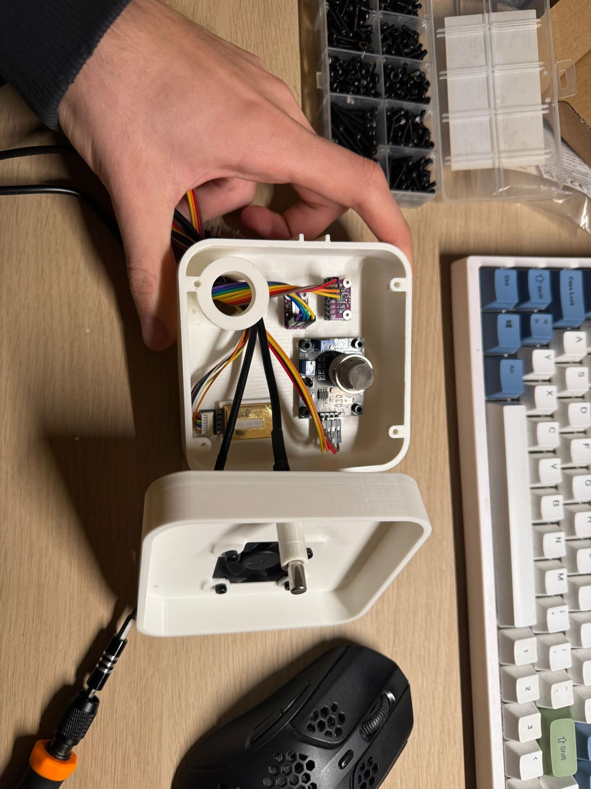
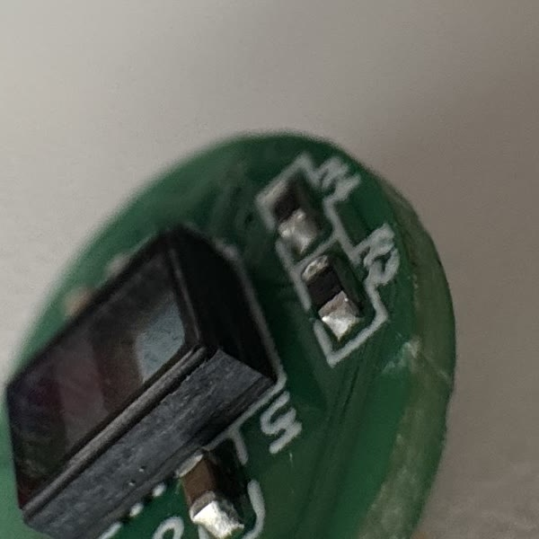
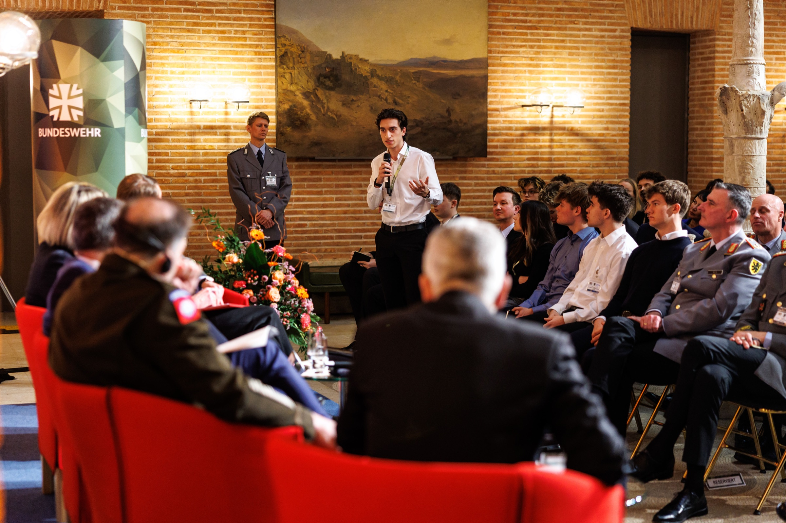
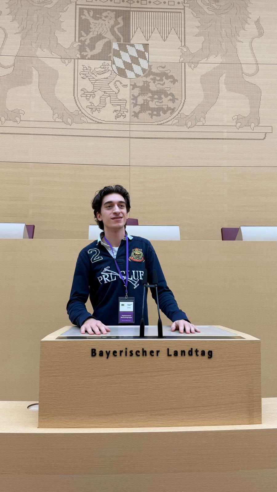
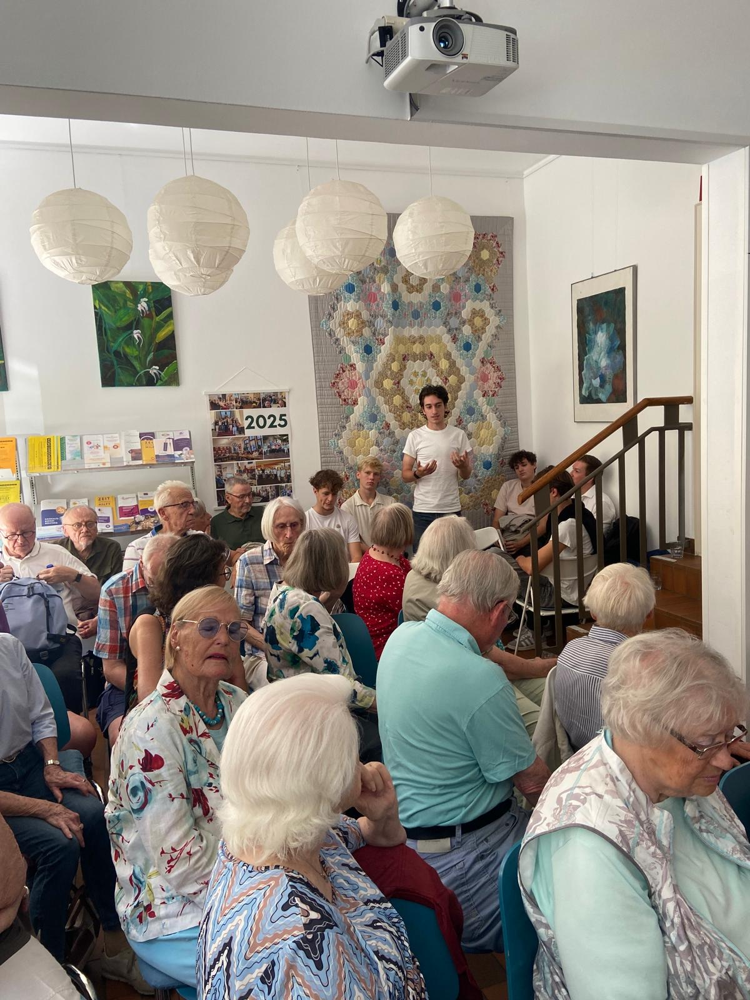
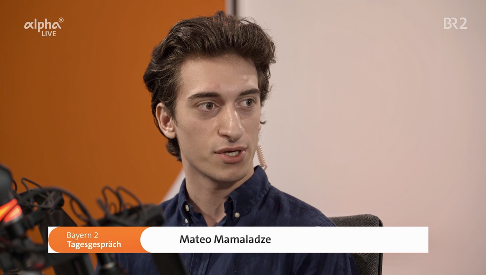
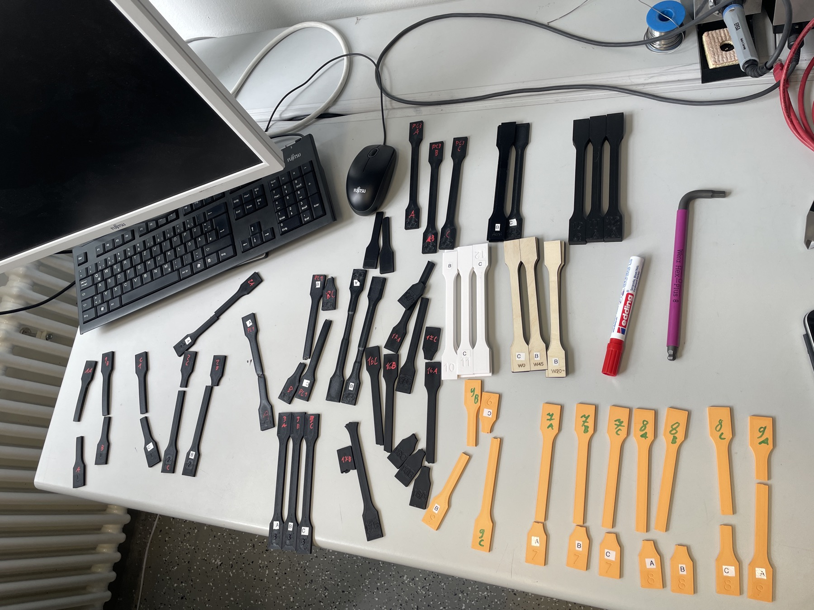

Mateo Mamaladze
Student engineer·Founder·Maker
I'm seventeen. I build hardware, software and companies.
be·grei·fen
German, verb
1. to take hold of something with your hand
2. to understand it
German uses one word for both. That's fairly close to how I work: when I want to understand something properly, I end up building a version of it I can hold. This site is sorted into the four places I've done that — objects, the body, learning, and public life.
Matter
A rover with wheels that change size, a humanoid robot I teach younger students to build, and eight printable designs I published before I turned fifteen.
Body
Trading vintage watches at fifteen got me interested in machines you're allowed to open. OpenPulse is my attempt at the modern version: a health wearable with swappable sensors.
Mind
A chemistry lab you can walk around inside, and a set of tools I keep building for other students — mentoring, competition matching, flight theory.
Society
Asking questions in rooms where students are usually there to listen — a security conference, a consulate, a television studio.
Plus background and a full record at the end.
Matter
Rovers, robots and printed parts.
A wheel that changes size.
Gear-driven blades open and close it, so the same wheel can handle loose gravel and then fit through a gap. I designed and printed it myself.
It belongs to MAGMA.
A rover I built with Juan and Roman for the DLR Vulcano Summer School challenge — adaptive wheels, environmental sensors and a printed body shell.
Volcanic ground is hot, loose and full of gas, so you send an instrument instead of a person.
That was the brief. Ours measures the air while it drives, and every part has a drawing behind it — the wheels went through four revisions before they stopped jamming.
magma_engineering_revD.pdf ↗Since 2024 I've run the robotics course at my school.
A group of younger students and one humanoid robot. We work through the mechanics, the electronics and the control software together; I wrote the interface we use to calibrate its servos. Explaining a joint to someone else is still the fastest way I know to find out whether I understand it.
Pendulum wall clock — the first one I put online, at thirteen
565 downloadsLaptop stand — adjustable, for small and large laptops
882 downloadsAnti-gravity wine stand — by far the most popular thing I've made
2,862 downloads · 933 likesGuitar pick holder — the last one before my fifteenth birthday
805 downloadsBody
Watches, and what I built after them.

I started buying and selling vintage watches when I was fifteen.
It taught me things school doesn't: how to value something, how to negotiate, and how to admit when a piece isn't what the seller claimed. I registered the business at sixteen and it has since turned over more than €17,000.
What kept my attention, though, was that you can open these things. Every part is visible and replaceable. Almost nothing you wear today works that way.
So we built OpenPulse.
A health wearable designed to come apart.
The sensors are swappable.
Small pucks — optical pulse, temperature, air quality — click into the same body, so you fit the device to the question you're actually asking.
You keep the raw data. No subscription, no closed app, nothing that stops working when a company loses interest.
Where it stands
1st in Europe — Blue Ocean 2026 1st, Health & Lifestyle — Startup Teens Top 14 — Jugend gründet


These are the actual manufacturing files for the current boards. If you want to check the work, start here.
Mind
Tools for learning difficult things.
BeGreifbar is a chemistry and physics lab you can walk around inside.
Molecules, fields and forces you can pick up, turn over and pull apart with your hands. Juan, Roman and I wrote it for the Meta Quest 3 — about 31,000 lines of code — and then tested whether it actually helps people learn. It took us through Jugend forscht from the regional round to the Bavarian state competition.
Our first results were suggestive rather than conclusive, which is an honest place to be. The next round needs a larger sample.
Munich Scholar Mentors — a tutoring platform I co-founded; I teach physics, computer science, maths and biology on it
munichscholarmentors.de ↗MTG forscht. — a group at my school that helps younger students get their own research projects started
First meeting, July 2026deinwettbewerb — finds the competitions worth entering out of about 300, and explains why each one fits
Web appSkyLab — a course on the aerodynamics part of the private pilot syllabus, with simulations and an exam mode
AviationEduVids & EduSlides — drafts teaching videos and slide decks, then critiques and revises its own output
AIIphigenie e-reader — an annotated edition of the Goethe play we read in German class
HumanitiesSociety
Asking questions in person.

Our school sent a delegation to a discussion on European deterrence, with the Inspector of the German Army, the Commanding General of US Army Europe and Africa, and a Bavarian state minister on the panel. Students were invited to ask questions. I asked mine — that's me standing up with the microphone.



Also — political simulations at the Amerikahaus · several visits to the Bavarian state parliament · rhetoric and public-speaking training since 2025
I don't think any of this is separate from the engineering. A sensor and a security policy are both systems that someone decided you shouldn't look inside. Asking is usually allowed.
Background
School, and the rest of my life.
I was born in Munich in 2009 to a German-Georgian family, and skipped a year, so I'm the youngest in my class.
I'm in the gifted track at the Maria-Theresia-Gymnasium, taking physics as my advanced course, and I sit my Abitur in 2027. Most of what I've actually learned, though, has come from projects and from places that were willing to let a school student in.

In 2024 I spent two months at the FRM II research reactor testing how strong a boron filament is.
Boron absorbs neutrons, which is why the reactor wants to 3D-print with it: you can then make shielding and beam-shaping parts in whatever shape an experiment happens to need, instead of machining them. The open question was mechanical — nobody had characterised how much load the printed material actually takes.
So I printed tensile specimens and pulled them apart on a universal testing machine: the boron filament against reference materials, varied print orientation, three specimens per configuration. The photograph is what was left afterwards. It was my first time working to somebody else's measurement standard, and the first time I understood that a material property is a number you have to earn.
FRM II research reactor, TUM — two months in Garching, tensile-testing a boron filament for printed neutron shielding
Apr–May 2024Physics Olympiad, second round — the German selection process for the international competition
759 entrantsKänguru der Mathematik, first prize — two years running, in grades 9 and 10
top ≈0.85%Mathematics Olympiad — reached the Bavarian state round
State roundEngineering summer programme in Cambridge — two weeks at the end of June
EngineeringWhen I'm not building things I'm usually at the theatre or the opera — eleven productions in the last two years, from Schiller to Fidelio. I share a small sailboat on the Ammersee with a friend, which involves more engine maintenance than sailing. And I cook Georgian food; in my family khinkali is how you welcome people.
Countries I've spent time in — Germany · Georgia · Italy · United States · Greece · Austria · Switzerland · United Kingdom · Hungary
The Record
Everything above in one list, with sources where they exist.
Or download it as a PDF ↓Blue Ocean — first place for Europe — with OpenPulse, in a competition of 23,000 students from 173 countries
winners ↗Startup Teens — first in Health & Lifestyle — one of seven category winners; €10,000, decided at the Berlin final
result ↗Jugend gründet — top 14 nationally — we were one of 34 teams out of 1,461 invited to pitch
listing ↗Jugend forscht — special prize at the Bavarian state round — for BeGreifbar, after winning the regional round in München-Süd
listing ↗Physics Olympiad — second selection round — the German qualifying process for the international competition
759 entrantsKänguru der Mathematik — first prize, twice — in consecutive years, grades 9 and 10
top ≈0.85%OpenPulse — co-founder; I lead the hardware and product side. Still a prototype, openly documented
repository ↗Vintage watch trading — a registered business since I was sixteen; buying, valuing and reselling
€17,000+ turnoverMunich Scholar Mentors — co-founder of a platform that matches students with tutors their own age
live site ↗OpenPulse · the MAGMA rover · the robot control interface · a printed timer · a sundial · a tool that bends G-code for non-flat printing
6 projectsBeGreifbar · EduVids · EduSlides · SkyLab · the Iphigenie e-reader · deinwettbewerb · a timetable viewer
7 projectsThreadmap · Stufenportal for my year group · Athena · a spatial task manager
4 projectsSafeguard, a content filter for YouTube · Maestro, which coordinates several models on one task
2 projectsMaterials testing at FRM II, TUM — mechanical characterisation of a boron-filled filament for neutron-absorbing printed parts
InternshipRobotics course at my school — I run it weekly for younger students
TeachingMunich Security Conference side event — our school delegation at the Prinz-Carl-Palais
school report ↗Talk on societal resilience — given with Lithuania's Consul General in Munich
CivicBavarian television and radio — interviewed about AI in schools
MediaThanks for reading.
If any of this is useful to you — a project, a place, a question — I'd like to hear from you.
hello@mateomamaladze.com Download the full CV PDF · 4 pages · everything on this page, with sources